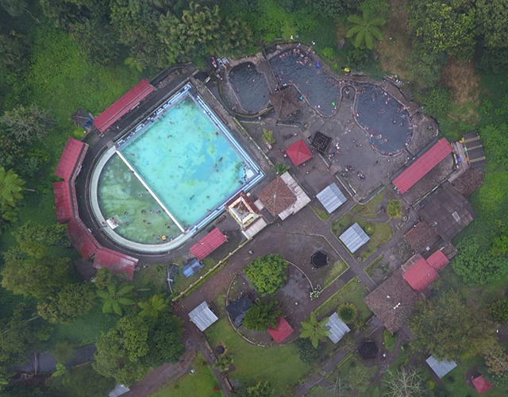

panduan wisata -
pemandian air panas cangar

Letak geografis
Objek Wisata Alam Cangar merupakan bagian kawasan Taman Hutan Raya Raden Soerjo yang peruntukannya sebagai blok pemanfaatan seluas 24,79 ha terletak pada posisi 7° 44' 16,86" - 7° 44' 44,23" LS dan 112° 31' 53,76" - 112° 32' 16,55" BT, di Desa Sumberbrantas, Kecamatan Bumiaji, Kota Batu. Areal ini memiliki tipografi datar, landai dan curam dengan ketinggian 1500 mdpl. pada areal datar dan landai ini banyak dijumpai sarana dan prasarana kegiatan pariwisata alam diantaranya outbound dan camping ground.
Terdapat akses jalan Provinsi yang membelah kawasan blok pemanfaatan Cangar dengan lebar ± 7 m dengan panjang 350 m. jalan ini menghubungkan antara Kabupaten Mojokerto dengan Kota Batu. Di area in itelah dibangun beberapa sarana untuk mendukung pengelolaan wisata alam di Tahura Raden Soerjo antara lain: loket, pos pengamanan wisata, warung makan, shelter, pendopo, pondok wisata, mess, aula pertemuan, toilet, lahan parkir, kolam pemandian air panas, kolam renang dan lain-lain. Selain pesona wisatanya, OWA Cangar juga bisa sebagai sarana forest bathing. Forest bathing merupakan salah satu alternatif untuk relaksasi yang dikenal dari Jepang sekaligus telah menjadi landasan perawatan kesehatan preventif dan penyembuhan dalam pengobatan alternatif.
Macam - Macam Objek Wisata Alam di Cangar
Taman Hutan Raya Raden Soerjo merupakan tempat hidup berbagai satwa. Satwa yang menjadi ikon Tahura Raden Soerjo adalah Elang Jawa (Spizaetuss Bartelsi), sedangkan satwa yang menjadi khas OWA Cangar adalah Lutung Jawa (Trachypithecus auratus). Baik Elang Jawa dan Lutung Jawa adalah satwa yang dilindungi. Adapun satwa lain yang dapat dijumpau di OWA Cangar adalah Tupai (Tupaia sp), Babi Hutan (Sus so), Monyet ekor panjang (Macaca Fasicularis), Kijang (Muntiacus Muntjak). Daerah ini berada pada ketinggian kurang lebih 1650 Meter dari permukaan laut dan ditumbuhi vegetasi hutan hujan tropis dataran tinggi dengan kanopi yang rapat dengan begitu banyak jenis tumbuhan yang merupakan pakan alami lutung jawa.
Lutung Jawa (Trachypithecus auratus) termasuk sub famili colobine yang disebut juga monyet pemakan daun (leaf eating monkey). Sub famili ini mempunyai ciri khas organ pencernaan (stomach) khusus yang mendukung bakteri untuk membantu mencerna makanan yang berserat tinggi seperti daun-daunan, biji-bijian, dan buah yang belum matang.
OWA Cangar memiliki beraneka ragam flora diantaranya (Litocarpus sundaicus), dan Kukrup (Engelhardia spicata), jenis lainnya yaitu Tutup (Macaranga gigantea), Lamer, Kabek, Dampul, Nyampo (Litsea monopetala), Epek, Anggrung (Trema orientalis), Damar (Agathis dammara), Pakis (Cycas rumphii), Cemara Gunung (Casuarina jughuhniana), Lembayungan, Tinggan, Kayu Bulu (Ficus virens), Kayu Bimo (Kigelia africana). Namun flora yang terkenal di Cangar adalah Anggrek.
Hutan Cangar merupakan habitat bagi spesies anggrek. Anggrek memiliki morfologi yang beragam antar spesiesnya, mulai dari bentuk akar, batang daun, dan bunga. Hutan cangar memiliki ketinggian 1600-1727 mdpl. Ketinggian tempat dan kondisi hutan cangar yang masih primer merupakan habitat ideal bagi berbagai spesies anggrek. Ada empat spesies anggrek endemik jawa di hutan Cangar, yaitu Dendrobium tenellum, eria verruculosa, Malaxis junghuhnii, dan Cerastotylis anjasmorensis (Comber, 1990)
Makanan atau jajanan hasil dari fermentasi sangat banyak jenisnya, salah satunya adalah tape ketan. Tape merupakan hasil olahan makanan yang melalui proses fermentasi pada saat pembuatannya. Tape memiliki cita rasa yang manis dan sedikit asam dengan tekstur yang lebih lembut dan legit. Makanan satu ini merupakan salah satu dari sekian banyak makanan khas nusantara yang kerap kita jumpai pada acara - acara tertentu, sebagai campuran untuk membuat dawet, campuran untuk membuat kue ataupun pada penjual jajanan pasar. Tape tergolong ke dalam jenis makanan basah tetapi tape mampu bertahan hingga kurang lebih satu minggu. Jadi jika anda ingin menikmati tape ketan hitam dengan ditemani pemandangan alam, Objek Wisata Alam Cangar salah satu solusinya. Berikut adalah cara membuat tape ketan hitam:
Bahan - Bahan :
- 1 Kilogram beras ketan hitam
- 4 Gelas air panas
- 4 Butir ragi tape
- 4 Sendok makan gula pasir halus
- Daun pisang secukupnya untuk membungkus tape ketan hitam
Langkah-Langkah :
- Cuci ketan hitam terlebih dahulu menggunakan air yang mengalir kemudian rendam dengan air bersih secukupnya selama satu malam lalu tiriskan
- Kukus ketan hitam hingga setengah matang lalu tuangkan air panas sebanyak 4 gelas ke dalam kukusan ketan. Aduk-aduk kembali dan masak hingga kukusan ketan hitam matang. Angkat dan tiriskan pada wadah atau tempat yang lebar seperti nampan.
- Siapkan wadah yang berukuran cukup besar, tata daun pisang untuk alas nampan dan menutupi semua bagian nampan. Masukkan sebagian ketan hitam yang telah dikukus, ratakan. Taburkan gula halus, tambahkan kembali ketan hitam diatasnya. Lakukan langkah ini sampai 3 atau 4 lapis.
- Tutup menggunakan daun pisang pada bagian permukaannya
- Diamkan atau biarkan ketan selama 3 hari 2 malam, baru bungkusan bisa dibuka dan dihidangkan.

Foto diambil menggunakan drone dari ketinggian kurang lebih 100 meter. Tampak berbagai fasilitas yang disediakan OWA Cangar yang dikelilingi hutan.